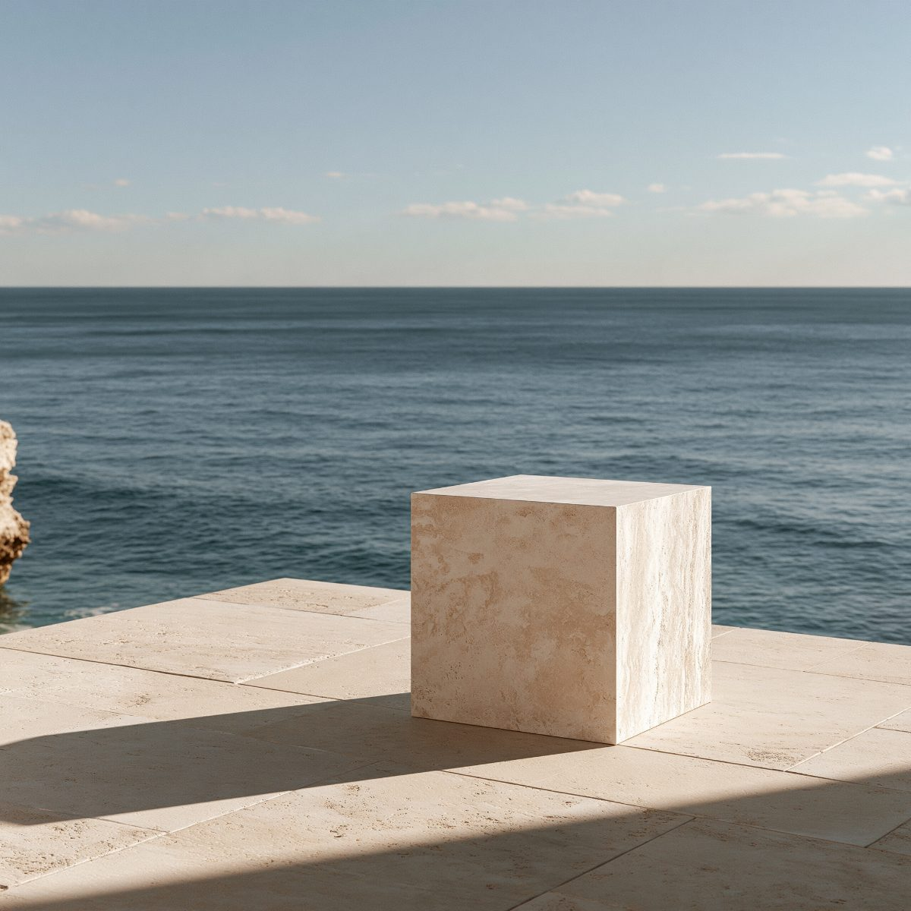
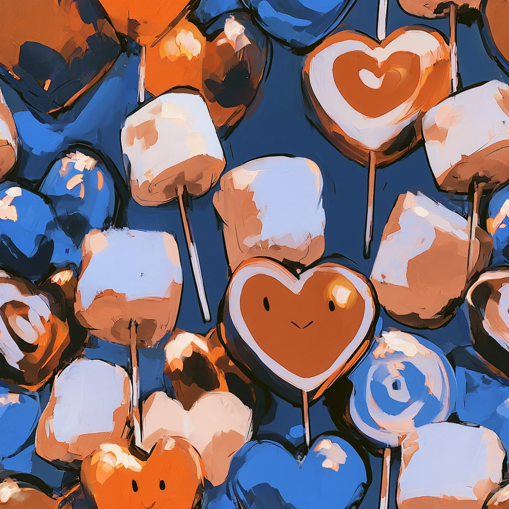
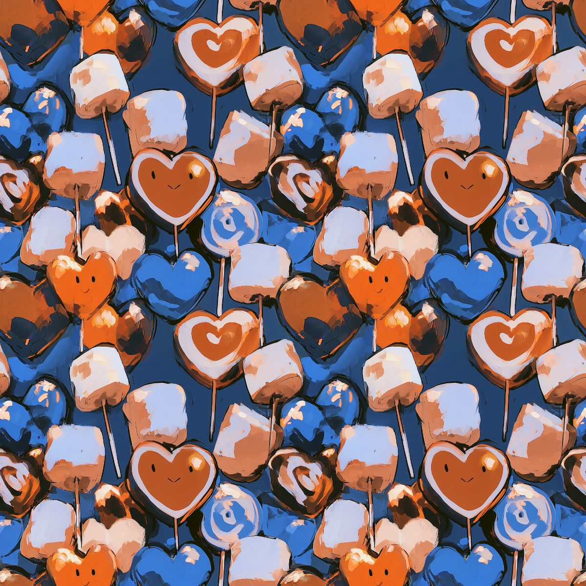
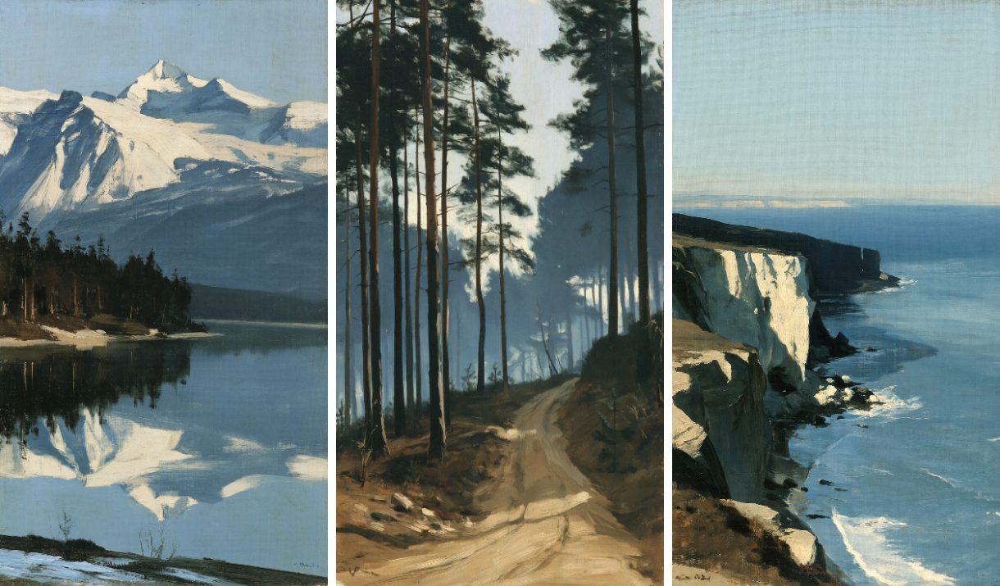
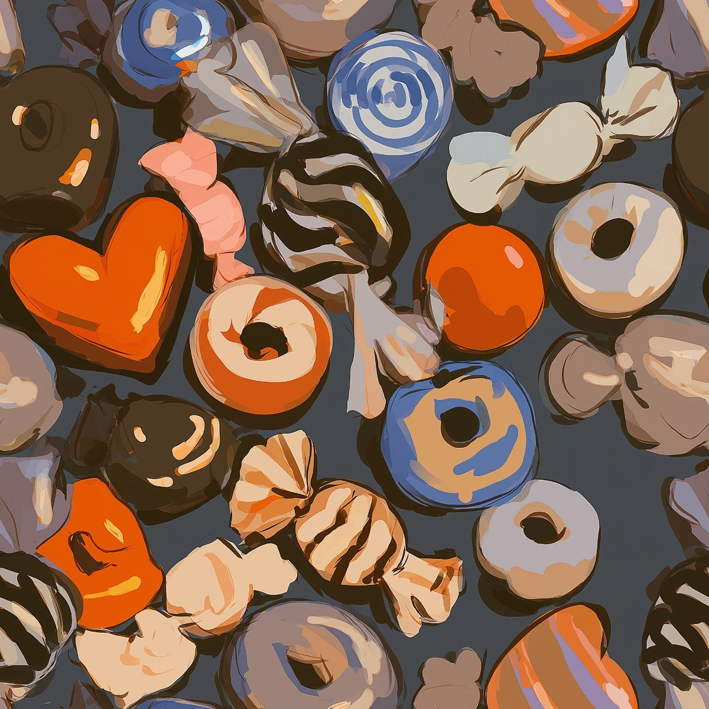
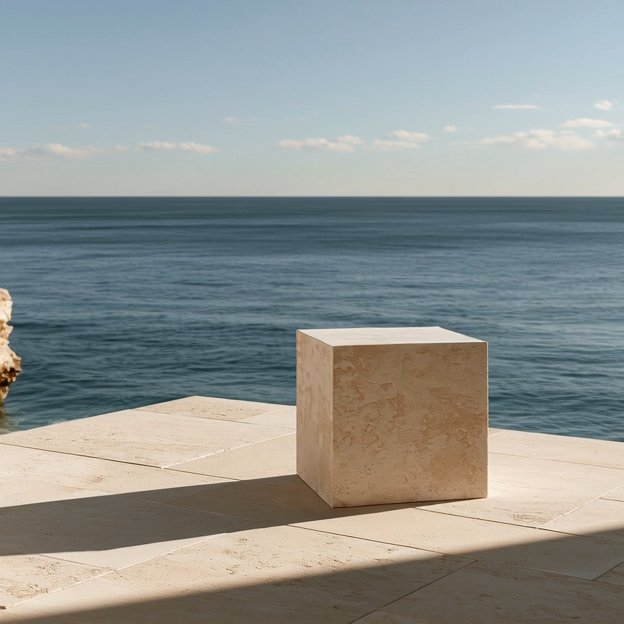

1. สรุป 30 วินาที
ใช้ทำอะไรดีที่สุด: วอลเปเปอร์ (wallpaper), ลายกระเบื้อง/แพทเทิร์นแบบ --tile และภาพ keyvisual ของ SwedishCandy, งานศิลป์สำหรับขาย Etsy ที่ผ่านการเลือก/แก้เองและบอกว่าเป็น AI, และคลิปสั้นวนลูปจากภาพนิ่งกฎ Fast vs Relax: ภาพ SD, --hd และ Creative upscale (ที่ทดสอบวันนี้) รันใน Relax ได้ ไม่เสีย Fast จากการทดสอบวันนี้ · มีแต่วิดีโอที่กิน Fast (SD batch 1 ≈ 1 นาที, HD ≈ 7 นาที) · Fast 15 ชม./เดือนหมดอายุทุกเดือน → คำแนะนำ: เอาไปใช้กับวิดีโอแผนยกเลิกต่ออายุแล้ว: หน้า Account แสดง "Active until Nov 26, 2027" และมีปุ่ม "Uncancel plan" (= ไม่ต่ออายุอัตโนมัติ) ใช้งานได้ถึง 2027-11-26 · เรื่องขอคืนเงิน: เอกสารระบุว่าทำได้เฉพาะเมื่อใช้ GPU ตลอดชีพ < 20 นาที — วันนี้ทดสอบไป 10 งาน (Fast ใช้ 8 นาที + งาน Relax) น่าจะเกินแล้ว แต่ให้ ตรวจในหน้า Manage Subscription เองviora/venita = ใช้ทำฉากหลังเท่านั้น (พื้น/แท่นวางเปล่า) แล้วนำรูปสินค้าจริงไปวางซ้อนใน Canva · ห้ามให้ MJ วาดเครื่องประดับ (ทดสอบก่อนหน้านี้ ความเหมือนสินค้าไม่ผ่าน 0/4)ต้องติดป้ายว่าเป็น AI บน Shopee / TikTok / Etsy ตามกฎแต่ละแพลตฟอร์ม (ดูหัวข้อ 7) · และเพราะ Standard ไม่มี Stealth (โหมดซ่อนผลงาน) ผลงานเป็นสาธารณะโดยค่าเริ่มต้น
2. Midjourney เก่ง / ไม่เก่งเรื่องอะไร
เก่ง
ลุคสวยแบบ art direction ตั้งแต่ค่าเริ่มต้น (แสง สี ระยะชัดตื้น) — เหมาะ concept art, moodboard, ภาพ editorial
คุมสไตล์ด้วย --sref (รูปหรือโค้ด), Moodboard, Personalization
--tile ทำลายต่อเนื่อง (V8.1/8.2)แปลงภาพนิ่งเป็นวิดีโอ 5 วินาที ต่อได้ถึง 21 วินาที
ภาพ HD ขนาด 2048 px ขึ้นไปในโหมด Relax
ไม่เก่ง
แก้ภาพละเอียดแม่นยำ — รีวิวภายนอก (andrew.ooo / CuriousRefuge) ระบุว่าเน้น "first-generation aesthetics"
ความเหมือนสินค้า: เคส Ba0028 ของ viora ไม่ผ่าน 0/4 ขณะที่ Flow ทำได้
ตัวอักษร: เอกสารทางการบอกว่าเหมาะกับอักษรละติน → ข้อความไทยไม่น่าเชื่อถือ (คำแนะนำ: อย่าใส่ข้อความ/ราคาในภาพ)
พื้นหลังโปร่งใส และขนาดภาพอิสระ ทำไม่ได้
พิมพ์ใหญ่: 2048 px ที่ 300 DPI ≈ 6.8 นิ้ว ต้องใช้ตัวขยายภายนอก
หมายเหตุ: ไม่มี blind benchmark ใดจัดอันดับ Midjourney (Artificial Analysis และ arena.ai Art ไม่มี MJ อยู่ในรายการ น่าจะเพราะไม่มี API) ดังนั้นคำว่า "สวยที่สุด" เป็นความเห็นจากรีวิว ไม่ใช่ผลวัดควบคุม
3. ใช้กับธุรกิจไหน
ระดับความเหมาะสมและข้อควรทำ/ไม่ควรทำ เป็น คำแนะนำ ที่สรุปจากข้อเท็จจริงของเอกสารและผลทดสอบ น้ำหนักทุกธุรกิจเท่ากัน
ธุรกิจ เหมาะแค่ไหน ควรใช้ทำ ไม่ควรทำ viora / venita กลาง ฉาก/พร็อพเปล่า (แท่นหิน, ชายทะเล) แล้ววางรูปสินค้าจริง · moodboard/sref ของแบรนด์ · วิดีโอฉากหลัง ให้ MJ วาดตัวเครื่องประดับ SwedishCandy สูง keyvisual · ภาพประกอบ · แพทเทิร์น --tile · moodboard ทำโลโก้ · ข้อความสุดท้ายหรือข้อความไทยในภาพ wallpaper สูง เครื่องมือหลัก · --hd 9:16 / 16:9 · ชุดเดียวกันด้วยโค้ด sref · ร่างใน Relax ขายงานพิมพ์ขนาดใหญ่โดยไม่ใช้ upscaler ภายนอก · หวังลิขสิทธิ์แข็งแรงจากภาพดิบ Etsy digital สูง งานที่คัด/แก้เอง + ระบุว่าใช้ AI · ภาพ preview ตรงกับสิ่งที่ผู้ซื้อได้จริง ขาย prompt bundle · แพทเทิร์น/สูตรที่ AI สร้าง · ลงขายอัตโนมัติจำนวนมาก (ผิด ToS ข้อห้ามใช้เครื่องมืออัตโนมัติ) family ต่ำ–กลาง ฉากสไตล์นิทาน หวังใบหน้าเหมือนจริง · ใช้รูปที่ไม่อยากให้เห็นสาธารณะ social-ads กลาง คลิปวนลูป 5–21 วินาทีจากภาพนิ่ง · ฉากหลัง · ติดป้าย AI ตามกฎ TikTok ใส่ข้อความ/ราคาในภาพ · ทำวิดีโอ HD ปริมาณมาก (Fast หมดเร็ว)
4. ผลทดสอบจริงกับบัญชีท่าน
ทดสอบ 2026-11-26 ผ่าน Chrome บัญชีของท่าน (V8.2) รวม 10 งาน · Fast คงเหลือ 14 ชม. 39 นาที → 14 ชม. 31 นาที (ใช้ 8 นาที ทั้งหมดเป็นวิดีโอ ) · ผลทดสอบนี้ชนะข้อสันนิษฐานจากเอกสารในจุดที่ขัดกัน
T2 — ฉากหลังสำหรับ viora/venita ผ่าน

แท่นวางเปล่าริมทะเล
--hd รันใน Relax ใช้ Fast = 0 · ~1 นาที 50 วินาที · 2048×2048ใช้เป็นฉากหลังสำหรับวางรูปสินค้าจริงได้ (ขัดกับสมมติฐานเดิมว่าภาพ HD ต้องใช้ Fast)
คำแนะนำ: ซ้อนรูปสินค้าจริงใน Canva แล้วตรวจแสง/ขอบเงาให้เข้ากัน (ยังไม่ได้ทดสอบขั้นซ้อนภาพ)
T3 — ลาย --tile ของ SwedishCandy ผ่านบางส่วน

ชิ้นเดียว 1024×1024 (SD) 
ต่อกัน 2×2 ไม่เห็นรอยต่อ
ต่อกัน 2×2 เรียบสนิท และ --sref 596994346 ให้ลุคเหมือนกันทั้ง 3 ภาพ
แต่โค้ดนั้น ทับคำว่า "pastel" ออกมาเป็นส้มเข้ม/กรมท่า/ครีม
บทเรียน: --sref random อาจทับคำบอกโทนสี → คำแนะนำ: เลือกโค้ดจากลุคที่ต้องการก่อน แล้วค่อยเขียน prompt
T4 — ชุดวอลเปเปอร์ ผ่าน

3 ภาพ ชุดเดียวกัน
--ar 9:16 --hd --sref 212096204 ทั้ง 3 ภาพ · Relax · Fast = 0ขนาด 1648×2944 ต่อภาพ (ด้านยาว ≈ 2.9k px สูงกว่าที่คาด 2.7k) · ชุดดูเป็นเซ็ตเดียวกัน
T5 — คิว Relax และ Upscale ผ่าน

งาน Relax + Creative upscale
รอ Relax 1 นาที 50 วินาที – 2 นาที 30 วินาที · มี 1 งานค้างที่ 90% จนต้องรันใหม่ → รวม ~6 นาที
Creative upscale 1024→2048 ~2 นาที ใน Relax ไม่เสีย Fast (ขัดกับตัวเลข ~2 นาที Fast ในเอกสาร)
ภาพที่สร้างด้วย --hd ไม่มีปุ่ม Upscale
T6 — วิดีโอวนลูป ผ่าน (ได้ตัวเลขต้นทุน)

เฟรมจากวิดีโอ SD 5 วินาที
SD loop: เลือก Relax แล้ว ไม่ถูกปฏิเสธ แต่ระบบคิด Fast 1 นาที · 624×624 · 5 วินาที
HD loop: Fast 7 นาที · 960×960 · 5 วินาที
สรุปผลจริง: วิดีโอกิน Fast เสมอบน Standard · SD batch 1 ≈ 1 นาที (เอกสารบอก 2)
T7 / บัญชี
T7 (ความเป็นส่วนตัว) ตรวจได้บางส่วน: โปรไฟล์สาธารณะของท่าน (midjourney.com/@ชื่อผู้ใช้) แท็บ Archive แสดงผลงานของวันนี้ รวมภาพ T2 และวิดีโอ พร้อม prompt ล่าสุดใต้ชื่อ · ยังตรวจแบบ logged-out/Explore ไม่ได้ · ไม่พบรูปอัปโหลดต้นฉบับบัญชี: "Active until Nov 26, 2027" และมีปุ่ม "Uncancel plan" → ปิดต่ออายุอัตโนมัติแล้ว จ่ายครอบคลุมถึง 2027-11-26
5. Fast vs Relax cheat sheet (Standard)
งาน โหมดที่ใช้ เสีย Fast? ที่มา ภาพปกติ (SD) Relax ไม่เสีย (Relax ไม่จำกัดสำหรับภาพ) เอกสารแผน ภาพ --hd Relax ไม่เสีย ~2 นาที ทดสอบ T2/T4 Creative upscale → 2048 Relax ไม่เสีย ~2 นาที ทดสอบ T5 วิดีโอ SD (batch 1) Fast เสมอ ~1 นาที ต่อ 5 วินาที ทดสอบ T6 วิดีโอ HD (batch 1) Fast เท่านั้น ~7 นาที ทดสอบ T6 + เอกสาร ("Standard, Pro, and Mega plans can generate HD resolution videos, but only in Fast Mode.") Repeat / permutation / Max Upscale ใช้ไม่ได้ใน Relax — เอกสาร GPU Speed
คำแนะนำ: เอกสารทางการระบุ Relax สำหรับวิดีโอเป็นสิทธิ์ของ Pro/Mega เท่านั้น → อย่าหวังว่าจะรันวิดีโอฟรีบน Standard แม้ระบบจะไม่ปฏิเสธเมื่อกด · ปริมาณคร่าว ๆ จากตัวเลขเอกสาร: Fast 900 นาที/เดือน ≈ 112 ชุดวิดีโอ SD 4 ชิ้น หรือ 34 ชุดวิดีโอ HD 4 ชิ้น (ต้นทุนจริงต่อคลิป SD จากการทดสอบคือ 1 นาที ไม่ใช่ 2 จึงทำได้มากกว่านี้) · Fast เพิ่มเติมซื้อได้ USD 4/ชม. หมดอายุ 60 วัน คืนเงินไม่ได้
6. กิจวัตรรายเดือนให้คุ้ม (คำแนะนำ)
ภาพทั้งหมดรันใน Relax (รวม --hd และ upscale) · ส่งงานเป็นชุดแล้วไปทำอย่างอื่น รอหลักนาทีFast 15 ชม./เดือนหมดอายุทุกเดือน แม้เป็นแผนรายปี → ใช้หมดกับวิดีโอ: ทดสอบ SD batch 1 ก่อนค่อยเปิด HDทำ moodboard / โค้ด sref ต่อแบรนด์ ครั้งเดียว แล้วใช้ซ้ำ (เลือกโค้ดจากลุคก่อน ตามบทเรียน T3)
แบ่งหน้าที่: MJ ทำฉาก → Flow/Canva ใส่สินค้าจริงและข้อความ
ไม่ซื้อ Fast เพิ่มจนกว่าวิดีโอจะพิสูจน์ว่าให้ผลคุ้ม
จดบันทึกรายเดือน: Fast ใช้กี่นาที · ชิ้นที่ใช้งานจริงต่อธุรกิจ · ใช้ผลนี้ตัดสินใจต่ออายุเมื่อใกล้ 2027-11-26
7. กฎแพลตฟอร์ม & สิทธิ์
แพลตฟอร์มขาย
Etsy: อนุญาตงานศิลป์ AI เมื่อผู้ขายใส่ความคิดสร้างสรรค์ของตนเอง "as long as they contribute their own creative input and follow Etsy's policies" · งานที่ใช้ prompt ต้องเปิดเผยการใช้ AI · ห้าม bot-generated, AI functional instructions (แพทเทิร์น/สูตร), prompt bundlesEtsy ภาพรายการ: ส่วนใหญ่ต้องมีรูปไม่ผ่านการแต่งอย่างน้อย 1 รูป · ไฟล์ดาวน์โหลดต้องมี preview ของเนื้อหาจริง · ภาพเสริมที่ AI แก้ได้ตราบเท่าที่ไม่ทำให้สินค้าดูต่างไป (คำแนะนำ: ภาพฉาก MJ ของ viora/venita ใช้เป็นภาพเสริมเท่านั้น)TikTok: ต้องติดป้ายเนื้อหา AI ที่ "แสดงฉากหรือคนที่ดูสมจริง" · ไม่ติดอาจถูกลบ จำกัด หรือติดป้ายโดยทีมงาน (แนวทางชุมชน มีผล 2026-09-24)Shopee TH: เนื้อหา AI ของบุคคลที่สามบนรายการสินค้าต้องระบุว่าสร้างโดย AI (ข้อ 3.3) และห้ามใช้ให้เข้าใจผิด (ข้อ 3.2.3) · ยังไม่พบวิธีติดป้ายสำหรับรูปภาพ สคบ. (OCPB): แนวทาง 2025-07-27 ให้แสดงการใช้ AI ให้เห็นชัด และขนาด/จำนวนสินค้าต้องตรงจริง สิทธิ์ & ความเป็นส่วนตัว
ความเป็นเจ้าของ: บริษัทรายได้เกิน USD 1M/ปี ต้องใช้ Pro/Mega ถึงเป็นเจ้าของผลงาน · ท่านไม่เกิน → Standard เพียงพอ และยังเป็นเจ้าของหลังยกเลิกสาธารณะโดยค่าเริ่มต้น: ToS §4 ผลงานเป็น "publicly viewable and remixable" และผู้ใช้ให้สิทธิ์ใช้เนื้อหา/ผลงานแบบถาวร · Standard ไม่มี Stealth (มีเฉพาะ Pro/Mega) · ผลแก้ไขรูปอัปโหลดใน Editor V8.X เห็นได้โดยสมาชิกอื่นลิขสิทธิ์อ่อน: สำนักงานลิขสิทธิ์สหรัฐ (2025-01-29) คุ้มครองเฉพาะส่วนที่มนุษย์สร้างสรรค์ ไม่ใช่แค่การเขียน prompt → คำแนะนำ: วอลเปเปอร์/โลโก้ดิบจาก MJ ป้องกันการลอกได้ยาก (กฎหมายไทยยังไม่ได้ค้นคว้า)ห้ามอัตโนมัติ: ToS §1 ห้ามใช้เครื่องมืออัตโนมัติ · หนึ่งบัญชีต่อหนึ่งผู้ใช้ · ไม่มี API
8. แหล่งอ้างอิง
ตรวจข้อมูล 2026-11-26 (เวลาไทย) · เอกสาร Midjourney อ่านผ่าน help-center JSON endpoint (หน้า HTML คืน 403)
ข้อจำกัด: ยังไม่ได้ตรวจหน้า Manage Subscription (สิทธิ์คืนเงิน) · ยังไม่ทดสอบสิทธิ์เห็นรูปอัปโหลดต้นฉบับแบบ logged-out · ไม่ได้ค้นกฎหมายลิขสิทธิ์ไทย · Shopee ยังไม่พบวิธีติดป้ายสำหรับรูป · ยังไม่ได้ทดสอบ T1 (Edit Model แก้ฉากหลังสินค้า — ผลเดิมจาก W-78 ไม่ผ่าน), T8 (family) และ T9 (หน้า Cancel/Manage Subscription)